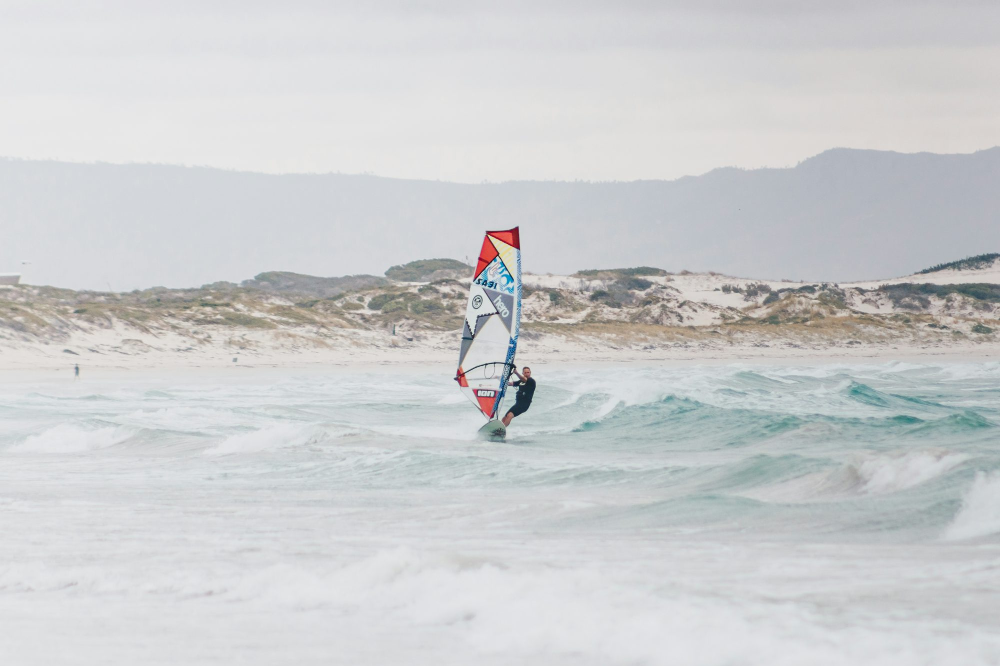

Exploring the Ocean: A Journey Through Popular Water Sports
An engaging look at various water sports, highlighting their techniques, equipment, and unique experiences.
Surfing: The Dance with Waves
Surfing stands as one of the most iconic water sports, with its roots deeply embedded in coastal culture. Surfers ride the waves, harnessing the ocean's energy to propel themselves forward. The equipment typically includes a surfboard and a wetsuit, with the choice of board varying based on the style of surfing, such as shortboarding or longboarding.
The core of surfing lies in its techniques. Surfers must learn to read the waves, timing their movements to catch the perfect swell. Paddling out, popping up onto the board, and balancing while riding the wave are crucial skills that require practice and patience. The thrill of catching a wave creates a sense of freedom and exhilaration, drawing surfers back to the ocean time and again.
Stand-Up Paddleboarding (SUP): A Versatile Adventure
Stand-up paddleboarding, or SUP, has gained immense popularity for its versatility and accessibility. Participants stand on a larger board and use a paddle to navigate across various water conditions, from serene lakes to ocean waves. SUP offers a full-body workout while providing a unique vantage point of the water and surrounding scenery.
The technique involves finding balance on the board and using smooth, controlled strokes with the paddle. Whether paddling calmly on a lake or catching small waves at the beach, SUP encourages participants to connect with nature and enjoy the tranquility of the water. Additionally, many paddleboarders incorporate yoga into their sessions, creating a blend of fitness and mindfulness that enhances the overall experience.
Kayaking: Navigating the Waters
Kayaking is another exciting water sport that allows enthusiasts to explore various aquatic environments. Kayakers use a small, narrow boat propelled by a double-bladed paddle, providing an opportunity for both relaxation and adventure. Kayaking can be enjoyed on calm lakes, winding rivers, or even in the open ocean, making it a versatile choice for outdoor enthusiasts.
The techniques in kayaking vary based on the environment. For example, whitewater kayaking requires skills to navigate through rapid currents, while sea kayaking focuses on longer journeys across open water. Learning to paddle effectively, perform rescues, and understand water safety are essential components for any kayaker. This sport fosters a deep appreciation for nature, allowing participants to immerse themselves in their surroundings while developing physical fitness and coordination.
Snorkeling: Exploring Underwater Wonders
Snorkeling provides a gateway to the underwater world, allowing adventurers to observe marine life in their natural habitat. With a mask, snorkel, and fins, snorkelers glide across the water’s surface, peering into vibrant coral reefs and schools of fish. This sport is often enjoyed in warm, shallow waters, making it accessible for individuals and families alike.
The key to a successful snorkeling experience is comfort and awareness in the water. Participants must learn to breathe through the snorkel while floating comfortably on the surface. Many snorkeling spots are teeming with colorful marine life, and understanding basic snorkeling etiquette ensures that the ecosystem remains protected. This intimate interaction with the ocean fosters a sense of wonder and respect for the environment.
Windsurfing: The Thrill of Wind and Water
Windsurfing combines elements of surfing and sailing, creating a unique and exhilarating experience. Participants stand on a board attached to a sail, using the wind to propel themselves across the water. The sport requires balance, coordination, and an understanding of wind patterns, making it a challenging yet rewarding pursuit.
Windsurfers must master various techniques, including tacking and gybing, to navigate effectively. The feeling of gliding across the water with the wind at your back is unmatched, and many enthusiasts find a sense of freedom and exhilaration in this sport. Windsurfing is often practiced in coastal areas where consistent winds provide optimal conditions for riding.
Scuba Diving: A Deep-Sea Adventure
For those seeking to explore the depths of the ocean, scuba diving offers an incredible adventure. Divers use specialized equipment to breathe underwater, allowing them to observe marine life and underwater landscapes up close. Scuba diving requires training and certification, emphasizing safety and environmental awareness.
The experience of diving opens a window to another world, where colorful coral reefs and diverse marine species thrive. Divers must learn essential skills, including buoyancy control and navigation, to ensure a safe and enjoyable experience. The sense of tranquility experienced while submerged in the ocean creates a profound connection to the underwater environment.
Jet Skiing: Thrills on the Water
Jet skiing adds a dash of excitement to water sports, offering a thrilling ride across the waves. Participants operate a personal watercraft, zipping across the water at high speeds. Jet skiing can be enjoyed on lakes, rivers, and coastal waters, providing an adrenaline rush for thrill-seekers.
Mastering jet skiing involves understanding the controls, balance, and safety protocols. Riders can perform tricks, race with friends, or simply enjoy the scenic views from the water. The feeling of the wind in your face and the spray of the ocean creates an exhilarating experience that draws many to this fast-paced sport.
Conclusion
Water sports encompass a diverse range of activities, each providing unique thrills and experiences. Whether riding the waves on a surfboard, gliding across the water on a paddleboard, or exploring the depths while scuba diving, each sport fosters a connection to nature and encourages a sense of adventure. As you consider which water sport to pursue, remember that each offers its own challenges and rewards. Embrace the opportunity to explore the ocean and discover the joy of water sports in your own way.